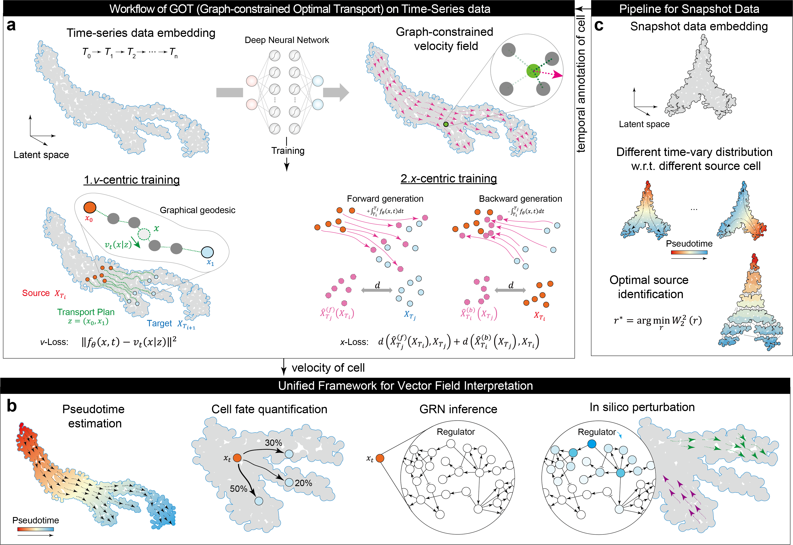

GOT documentation#
GOT: Deciphering Cellular Dynamics by Learning and Interpreting Vector Field
pyGOT is a python package help biologist to analyze the dynamics of cell.
{kind=link}
Installation#
Installation with pip#
To install with pip, run the following from a terminal:
conda create -n pyGOT python==3.10
pip install py-scgot
Installation from GitHub#
To clone the repository and install manually, run the following from a terminal:
git clone git@github.com:Witiy/pyGOT.git
cd pyGOT
conda create -n pyGOT python==3.10
pip install .
Quick Start#
This package consists of two main functional components. The first focuses on vector field learning. The second involves analyzing cellular dynamics by interpreting the learned vector field.
Vector Field Learning#
Time-Series#
import pygot
import torch
import scvelo as scv
embedding_key = 'X_pca'
velocity_key = 'velocity_pca'
time_key = 'Day' # your experimental time label
model, history = pygot.tl.fit_velocity_model(
adata, embedding_key=embedding_key, time_key=time_key
)
pygot.tl.velocity(adata, model, embedding_key=embedding_key, time_key=time_key)
pygot.tl.velocity_graph(adata, embedding_key=embedding_key, velocity_key=velocity_key)
scv.pl.velocity_embedding_stream(adata)
Snapshot#
import pygot
import scvelo as scv
embedding_key = 'X_pca'
velocity_key = 'velocity_pca'
model, history = pygot.tl.traj.fit_velocity_model_without_time(
adata, embedding_key, plot=True, basis='tsne',
single_branch_detect=True, cell_type_key=cell_type_key
)
adata.layers['velocity'] = pygot.tl.traj.velocity(
adata, model, embedding_key=embedding_key
)
pygot.tl.traj.velocity_graph(adata, embedding_key=embedding_key, velocity_key=velocity_key)
scv.pl.velocity_embedding_stream(adata)
Vector Field Interpretation#
Velocity-based Pseudotime#
# Fit the probability model
pm = pygot.tl.analysis.ProbabilityModel()
history = pm.fit(adata, embedding_key=embedding_key, velocity_key=velocity_key)
# Estimated pseudotime of cells
adata.obs['pseudotime'] = pm.estimate_pseudotime(adata) # pseudotime
adata.obs['var'] = pm.estimate_variance(adata) # variance of time
Cell Fate Prediction#
cf = pygot.tl.analysis.CellFate()
cf.fit(
adata, embedding_key='X_pca', velocity_key='velocity_pca',
cell_type_key='clusters', target_cell_types=['Beta', 'Alpha', 'Delta', 'Epsilon']
)
adata.obs[adata.obsm['descendant'].columns] = adata.obsm['descendant']
sc.pl.umap(adata, color=adata.obsm['descendant'].columns, ncols=2)
Developmental Tree Inference#
roadmap = pygot.tl.analysis.TimeSeriesRoadmap(adata, embedding_key, velocity_key, time_key)
roadmap.fit(cell_type_key='clusters', n_neighbors=30)
filtered_state_coupling_list = roadmap.filter_state_coupling(pvalue=0.001) # permutation test
Gene Regulatory Network Inference#
grn = GRN()
grn_adata = grn.fit(adata, species='human')
print(grn_adata.ranked_edges.head()) # print the top regulatory relationship
In silico Perturbation (after GRN inference)#
import celloracle as co
oracle = co.Oracle()
oracle.import_anndata_as_normalized_count(
adata, cluster_column_name=cell_type_key, embedding_name='X_umap'
)
# Export to celloracle
grn.export_grn_into_celloracle(oracle)